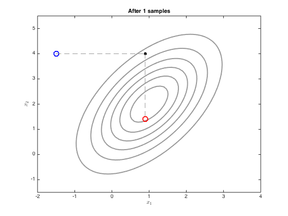
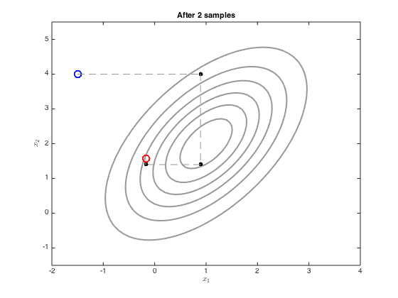
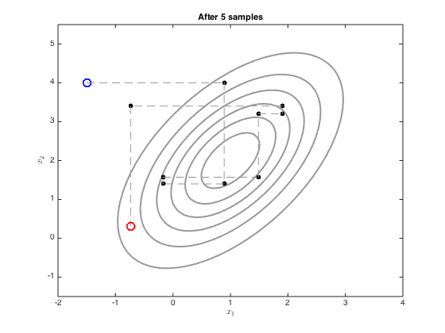
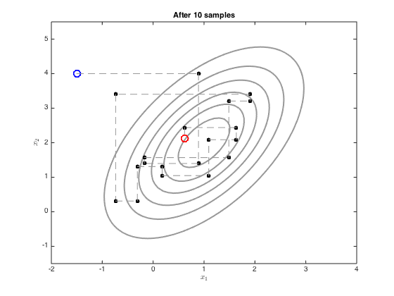
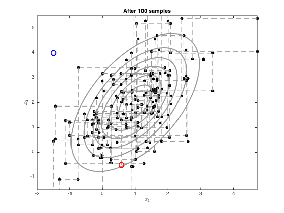

Contents
gibbsgauss.m
Demonstrates use of Gibbs sampling to sample from a multi-dimensional Gaussian
From A First Course in Machine Learning Simon Rogers, August 2016 [simon.rogers@glasgow.ac.uk]
clear all;close all;
First, create the objects to plot the Gaussian contour
Define the mean and covariance
mu = [1;2]; co = [1 0.8;0.8 2]; % Define a grid of points for the contours [Xv,Yv] = meshgrid([-2:0.1:4],[-1:0.1:5]); % Compute the pdf over the grid Ci = inv(co); P = zeros(size(Xv)); for i = 1:size(Xv(:)) P(i) = -log(2*pi)- 0.5*log(det(co)) - 0.5*([Xv(i)-mu(1) Yv(i)-mu(2)]*Ci*[Xv(i)-mu(1) Yv(i)-mu(2)]'); end P = exp(P);
We now sample with Gibbs sampling using the equations on p.317
Define the initial point - try changing this
x = [-1.5;4]; xall = x'; ylim([-1.5,5.5]) plot_at = [1,2,5,10,100]; for i = 1:100 % Sample x_1 mu_1 = mu(1) + (co(1,2)/co(2,2)) * (x(2)-mu(2)); ss_1 = co(1,1) - co(1,2)^2/co(2,2); oldx = x; x(1) = randn*sqrt(ss_1) + mu_1; xall = [xall;x']; % sample x_2 mu_2 = mu(2) + (co(2,1)/co(1,1)) * (x(1)-mu(1)); ss_2 = co(2,2) - co(2,1)^2/co(1,1); oldx = x; x(2) = randn*sqrt(ss_2)+mu_2; xall = [xall;x']; if any(plot_at==i) figure(i) contour(Xv,Yv,P,'k','linewidth',2,'color',[0.6 0.6 0.6]) hold on % Plot the initial one plot(xall(1,1),xall(1,2),'bo','markersize',10,'linewidth',2) % Plot the middle ones for j = 2:size(xall,1)-1 plot([xall(j-1,1),xall(j,1)],[xall(j-1,2),xall(j,2)],'k--','color',[0.6 0.6 0.6]) plot(xall(j,1),xall(j,2),'ko','markersize',5,'markerfacecolor','k') end % plot the end one plot([xall(end-1,1),xall(end,1)],[xall(end-1,2),xall(end,2)],'k--','color',[0.6 0.6 0.6]) plot(xall(end,1),xall(end,2),'ro','markersize',10,'linewidth',2) ylim([-1.5,5.5]) xlabel('$x_1$','interpreter','latex'); ylabel('$x_2$','interpreter','latex'); title(sprintf('After %g samples',i)); end end    